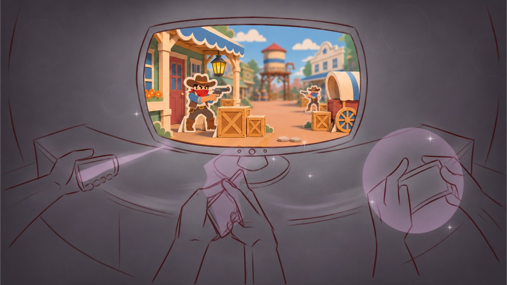

Convoy Rush
車が自動で走る中、スマホで照準を合わせ、仲間と一緒に敵を撃ちます。色の異なる照準はプレイヤーごとに割り当てられ、身を隠すとリロードできます。
Your vehicle drives while you and your crew aim, shoot, and take cover to reload. Each player controls a different colored reticle.
ひとつの画面。コントローラーは、みんなのスマホ。
One screen. Everyone plays with their phone.
『Arcade Lab』は、ひとつの画面を囲んで遊ぶマルチプレイヤーゲーム集です。スマートフォンをコントローラーにして、同じ仕組みでいろいろなゲームを遊べます。
Arcade Lab is a collection of multiplayer games for one shared screen. Everyone joins on their phone and uses it as a controller. The same setup works across different games.

車が自動で走る中、スマホで照準を合わせ、仲間と一緒に敵を撃ちます。色の異なる照準はプレイヤーごとに割り当てられ、身を隠すとリロードできます。
Your vehicle drives while you and your crew aim, shoot, and take cover to reload. Each player controls a different colored reticle.
同じスマホ操作で遊ぶ、西部劇風のアーケードシューティングです。
A Western arcade shooter that uses the same phone controls.
社内で実際に6人で遊んで動作を確認し、好評だったため、本制作に進むことにしました。最初のプレイ可能なバージョンは2027年2月下旬が目標です。TIGSでは「Convoy Rush」または「Sunset」のどちらか1作品を試遊展示する予定です。
Six people played together in an internal test. The setup worked, and the feedback was positive, so we’re moving into production. We’re aiming for a first playable version in late February 2027. We plan to bring either Convoy Rush or Sunset to TIGS.
日本語の説明文はAIを使って翻訳しました。訳に誤りがありましたら、申し訳ありません。